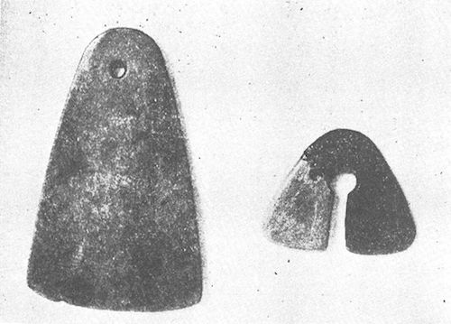
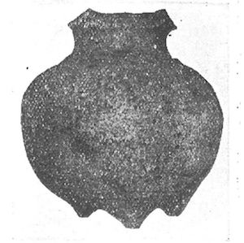
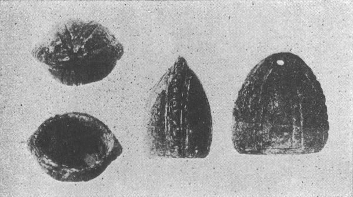

昨年〔（大正一五年）〕一月発行の本誌〔（『民族』）〕第一巻第二号において、自分は柳田〔（国男）〕君の促しによって、「奥羽地方のアイヌ族の大陸交通はすでに先秦時代にあるか」という標題のはなはだ長たらしい、しかも内容のきわめて貧弱な一小篇〔（前章）〕を掲載して戴いたことであった。それはかつて同じ柳田君が『郷土研究』を発行せられた時に、同誌の同じ第一巻第二号において、ほんの少しばかりのヒントから秦人と銅鐸とに関する論拠はなはだ薄弱な考証〔９〕を発表したところが、その後続々それを裏書きすべき新資料が発見せられて、今では少くも自分限りにおいて、定説といってもよいほどの確信を得るに至ったので、自分にとってこのはなはだ喜ばしい嘉例を追うて、相変らずわずかばかりのヒントから、物好き気分半分に、デッチあげた奇抜な考説を発表して、他日さらにこれを証明するに足るの新証拠の、出現を待とうというくらいの小野心に過ぎないのであった。
しかるにその後一年ならざるに、この将来を祝福した自分の小野心は、果して続々新資料の発見によって、満足されつつある気持がするのである。すなわちここにそれを同好諸君の前に披露して、自分の稚気満々たる喜びをお裾分けしたいと思う。なんだそんなつまらぬ物がと思われるお方々は、御遠慮なく御叱正を賜わりたい。幸いにそれに共鳴せられるお方々は、どうかこれが材料を御提供くださって、研究の進捗を助けられたい。
さきに自分が本誌において、奥羽地方のアイヌ族がすでに先秦時代に際して、大陸と交通したのではなかろうかというような、突飛な説を担ぎ出すに至ったのは、主として津軽半島の北端に近い宇鉄から発見せられた石刀が、先秦時代のシナの刀貨と類似しているところにヒントを得たためであった。もちろんこの以外にも、土器の形態やその表面の文様に、先秦時代の古銅器のそれに似たらしく思われるもののあること、日本にはまだその存在を知らないところの硬玉をもって造った曲玉等の、しばしば発見せられること、奥羽の古墳のある物から先秦の刀貨の発見せられたということ等をも附け加えておいたが、実をいえば、証拠としてはかなり薄弱なものを陳列したに過ぎなかった。しかしながら自分が、そんな薄弱な資料の集りから、ともかくそんな大胆な説を発表してみたゆえんのものは、実は同じく石器時代の遺物といっても、奥羽北部から出る土器には特別に精巧なものが多く、関東地方その他のものとは、一見選を異にするほどの優品が少からず、また硬玉製の曲玉等も、特にこの地方に多く発見せられることなどからして、ここに一種特別の石器時代文化が発達しておったかに想像せられるためであった。これらの進歩したる文化は、この地方においてのみたまたま出現したと解するよりも、ある他の進歩したる外来文化の影響を受けて、これがために促されたと解するを至当と信ずるのである。
奥羽北部地方の土器には、実際優秀なる地方色があらわれている。それを古くは亀ガ岡式などと呼んでいたが、近ごろ鳥居〔（龍蔵）〕博士一派の考古学者は、これを
むずかしい理窟は後のこととして、ここにはまずその後において自分が知ることを得た、シナ文化の影響あるものらしく思われる新資料について、そのいくつかを紹介してみよう。

第一図 秋田県北浦出土の玉斧（左）と
 状耳飾（右）
状耳飾（右）まず第一に御披露すべきものは、第一図の玉斧である。あるいは圭というべき部類に属すべきものかも知れぬ。かつて秋田県南秋田郡男鹿半島の北浦〔（男鹿市）〕から、同じ写真の
状耳飾とともに発見せられたもので、玉質は俗に翡翠の皮と呼ばれる不良質の硬玉である。明治四十年ころこの地における石器時代遺蹟の表面採集から得たもので、今その包含状態を知るを得ぬを遺憾とするが、ともかくそれが石器時代の遺品であることには毫末の疑いがない。この玉斧はその長さ約三寸、硬玉を厚さ一分強に挽き割って、一端に近く穴を穿ち、他端に鈍い刃をつけたもので、当時の石器時代住民が、材料をシナから輸入してみずから製作したものとしては、あまりに手数のかかり過ぎた品である。けだしシナにおいて製作輸入したものであろう。この種の玉斧が、佩玉の類としてシナで使用せられたのは、先秦時代から前漢に渉ってのことであったという。問題の品が果して古代シナにおいて実用に供せられたものか、あるいは日本向に作られたものであるかは明かでない。その表面の琢磨の不十分なるところから察すれば、あるいは後の解釈を適当とすべきものかも知れぬが、いずれにしてもわが北部奥羽における石器時代の遺蹟から、この珍らしい玉斧の発見せられたことは、直接・間接にシナとの交通の古く存在したことを、推測せしむるに十分なる資料を供給したものであると信ずる。
琢磨を加えた薄い石斧の一端に近く穴を穿って、懸垂に便したものは、故真崎勇助翁の蒐集品中にも二個あった。ともに秋田県下の出土で、一つは赤褐色の、磨きの粗末な、長さ四寸四分五厘、幅は端に近いところで一寸三分五厘、厚さ一分の細長いもの、今一つは長さわずかに一寸九分、幅広い所で五分、厚さ一分強の、暗緑色光沢を有する小さいものである。けだし右の玉斧の類をまねて作ったものであろう。類品としては、かつて鋼駝坊蔵品中に、岩代国某地の貝塚から発見せられたという、長さ二寸四分五厘、幅一寸四分五厘、一端に近く穴を穿った、琅
 製の美品を見たことがある。ただしこれは第一図の玉斧のごとき刃を有せず、むしろ圭ともいうべきものであったと記憶する。今一つは東京帝室博物館の所蔵で、下野国那須郡湯津上村の出土、材料は浅緑色半透明の所々に白斑ある琅で、長さ約二寸四分、幅約一寸四分、厚さ二分ばかりの鈍刃を有するもの、比較的大きな穴が、やや中央に近く、しかもやや一方に片よって、斜めに不恰好に穿たれている。しかしこれは広い方の一端に鈍刃を附してあるから、やはり玉斧というべきものであろう。
製の美品を見たことがある。ただしこれは第一図の玉斧のごとき刃を有せず、むしろ圭ともいうべきものであったと記憶する。今一つは東京帝室博物館の所蔵で、下野国那須郡湯津上村の出土、材料は浅緑色半透明の所々に白斑ある琅で、長さ約二寸四分、幅約一寸四分、厚さ二分ばかりの鈍刃を有するもの、比較的大きな穴が、やや中央に近く、しかもやや一方に片よって、斜めに不恰好に穿たれている。しかしこれは広い方の一端に鈍刃を附してあるから、やはり玉斧というべきものであろう。また第一図の玉斧とともに発見せられた
状耳飾は、幅の最も広い所で約一寸六分、材料は軟玉で、発見のさいにはすでにその三分一強を失っていた。写真は後にセメントをもって補ったものである。この種の遺品は奥羽地方を始めとして、飛騨のごとき山国、その他の諸地方から、従来しばしば縄文式土器と伴って発見せられたもので、その用途は久しく不明とされていたが、先年河内国府〔（藤井寺市）〕の遺蹟発掘のさいに、頭蓋骨の左右に伴ってその幾組かが発見せられたがために、それが疑いもなく耳飾であることが証明せられた。その形状は種々あって、本品のごとくほぼ三角形をなしたものもあれば、今少し長くして三味線の撥形をなしたもの、あるいは棗形、無花果などというべきものもあるが、普通はシナ古玉のと同じく円形をなしたものである。それで状耳飾の名をもって呼ばるることになった。シナの古玉としてのはむろん耳飾ではない。またわが国から発見せらるる状耳飾は、これをもってシナ古玉のに比するに、大きさにおいて遙かに小さいものではあるが、しかしその意匠が本来から来たものであることはほとんど疑いを容れなかろう。しかして自分は、その起原はやはり奥羽北部にあって、それが耳飾として普通に使用せられたがために、遠く近畿・中国あたりまでも伝播するに至ったものと解せんとするのである。この
状耳飾と関聯して紹介すべきものは、これも故真崎翁の蒐集品のうちに、径一寸七分の小璧のあることである。円形にして厚さ一分弱中央の穴の径四分強、暗緑色の光沢あるもので、羽後北秋田郡八幡岱新田村〔（合川町）〕の出土とある。しかもその縁に近く一小孔を穿ってあるのは、璧の本体を忘れて、右の玉斧や曲玉などと同じく、懸垂に便したものであろう。しかして自分は、これをもってもとはシナ伝来の璧から意匠を得て、わが地において製作したものと考えるのである。
第二図 青森県甲地村蓼内出土の鬲状土器
次に紹介すべきは写真第二図の

第三図 秋田県荒巻村後山出土の扁鐘型小土器
今一つは、第三図写真の扁鐘型小土器である。高さわずかに一寸四分、口径長い方で一寸三分、短い方で九分五厘、小玩具ともいうべきほどのものではあるが、その形が先秦時代の扁鐘に似ているが面白い。その左右に鰭のついているところは、銅鐸の意匠に似ているといってもよい。あるいは扁鐘と銅鐸とを結びつける連鎖の傍例と見てもよいのかも知れぬ。発見地は秋田県河辺郡荒巻村後山で、むろん石器時代の遺品である。従来も釣鐘型土器と呼ばるる円形無紋の小土器は、しばしば奥羽北部地方から発見せられていた。しかしこの小土器のごとく、その形が押し潰されたようになり、鰭と文様とを有するものに至っては、寡聞なる自分にとっては唯一の珍品である。かつて故坪井〔（正五郎）〕理学博士がこれを見られて、この類のものを他でも一個見たことがあると言われたそうなが［＃「言われたそうなが」はママ］、それは果してこの銅鐸型のものか、あるいは普通の釣鐘型のものか、博士の逝かれた今日それを明かにするを得ぬのは遺憾である。何分にも小型であるがために、その文様も至って簡単ではあるが、もし今少し大型であって、胴の部に横に線文を加えたならば、立派に袈裟襷文様の銅鐸を聯想せしむべきものである。けだしこれまたシナ古代の扁鐘の意匠をまねて、製作せられたる小玩具というべきものであろう。その類品としては、青森県史編纂員中道等君の蔵品で、これも扁鐘型というべくやや押し潰した形に出来ており、高さ一寸七分、中央の幅広い方で一寸四分、狭い方で一寸一分、口はやや狭まって、口径広い方で一寸二分五厘、狭い方で八分五厘に過ぎない小土器である。しかし右写真のごとき鰭もなければ、文様もない。
このほかに、写真を添付し得ぬを遺憾とするが、皿型土器にして四本のやや高い足を有するものが、奥羽北部からしばしば発見せられている。自分の見たものでは、久原房之助氏の二楽荘所蔵津軽発見のもの大小二個、秋田県北秋田郡鷹巣町浄運寺蔵同郡麻生発見のもの一個に過ぎないが、他からも発見せられたものがあるらしい。これを試みにアンダーソン氏著『中華遠古の文化』所載の、河南省仰韶村発見の脚附盆なるものに比するに、彼は三足にして是は四足たるの差異はあるが、このくらいのことは民族的好尚の差異に基づくもので、この品が全然他の石器時代土器と製作意匠を異にするところ、またかの品を摸擬したるにあらずやと思わしめるものがある。
最後に今一つ。青森県北津軽郡十三村〔（市浦村）〕願立寺所蔵玻璃製腕輪（？）のことを附記して、後の研究を俟つことにしたい。この品は明治の初年に、同村字古中道の畑地から、表面採集で獲たものの由で、環の径二寸六分、環身の径六分、乳白色にして所々に緑色を交え、一見翡翠模造のガラス製品のごとく光沢あっていかにも新しく見えるものである。自分のはじめこれを見たさいの感想では、近代にシナから輸入せられた新品ならんかと想像して、
 々に看過したのであったが、過般朝鮮慶州の瑞鳳塚から、ガラス製腕輪の発見せられたことから考うれば、これまた案外古い時代のものであって、この僻遠の津軽のはてに輸入せられたものであるかも知れぬと思われ出した。
々に看過したのであったが、過般朝鮮慶州の瑞鳳塚から、ガラス製腕輪の発見せられたことから考うれば、これまた案外古い時代のものであって、この僻遠の津軽のはてに輸入せられたものであるかも知れぬと思われ出した。以上さきに発表した以後に知るを得た新資料中の主なるもので、
状耳飾のほかは他に多く類例あるを知らず、むろん普通の石器時代遺品とは趣を異にして、古代シナ文化の香気の高いものであり、しかもそれが、状耳飾と那須の玉斧とのほかは、いずれも石器時代に特別の技術の発達を示した北部奥羽地方から発見せられたということにおいて、自分の不十分なる推測説を裏書きすべきものであると信ずる。その状耳飾が少からず他の地方から発見せられ、玉斧の一つが下野から出たということは、これらの貴重なる物品が、他に移動し得ることによって、また他にても製作し得ることによって、いかようにも説明し得ることであろう。案ずるに、この島国の住民にして、古くシナと交通したものは、記録の上からは『漢書』以下に見ゆる倭人をもって初めとする。漢の武帝朝鮮を征して楽浪以下の四郡を置いてから、倭人の交通が始まったというのである。年代は今より約二千年以前で、その交通は魏の時代までも引続いて行われ、漢魏の文化がこれによって少からず我に伝えられたことは、遺物の上からでも立派に証明せられるのである。漢代の銅剣、それに倣って、あるいはそれに新意匠を加えて、わが島国で作ったと解せられる銅剣・銅鉾の類、またその銅剣の形を模したと思われる石剣、漢魏時代の鏡鑑、それに倣ってわが島国で作ったと解せられるいわゆる漢式鏡等、その他シナ古代文化の遺品、またはその影響を受けたと思われるものの、少からずこの島国で発見せられることは、古書の記事と相俟って、もはや何人も異論なきところである。しかもその交通者は、主として九州方面の住民であったがために、銅剣・銅鉾のごときも、多くこの方面に限って発見せられ、近畿以東には及ばなかった。大和朝廷とシナとの交通が直接に開かれたのは、わが国ではほぼ応神天皇の御代のころ以後で、シナでは東晋末以降、宋・斉等、南朝の諸国であった。したがって近畿地方の古墳墓に、漢魏時代のものと思わるる鏡鑑の副葬せられているのは、おそらく九州地方の輸入品が、さらに東に伝わったものであろうと自分は信じているのである。
これら漢魏の時代において、わが西方諸国の人々のシナと交通したことは、記録と遺物と相俟って、もはや毫末の疑いを容れないところであるが、それよりもさらに以前の時代、すなわちわが国では天孫民族の発展がいまだ著しくなかった古代において、秦韓地方から大挙この島国に移住して、漢以前のある種の文化をわが国に伝え、近畿を中心とした四囲の地方に、銅鐸文化を現出したと思わるる秦人のことについては、すでに記したごとく、今より十数年前に柳田君の『郷土研究』（第一巻第二号）で、始めてその説を発表したことであったが、その後これを裏書きすべき数多の新資料の発見によって、今は少くも自分限りでは、ほぼこれについて確信を得るまでに、その研究が精緻の域に到達し得たつもりである。この研究は主として銅鐸そのものの実物調査から導かれたもので、右の漢魏の交通が、むしろ記録によって闡明せられるのとはすこぶる趣を異にしてはいるが、しかも一方には不完全ながら、記録上にも参考とすべき資料が少くなく、またきわめて一小片鱗ながらも、天日槍伝説によって相啓発すべきところがないでもなかった。
しかるに今回のいわゆる津軽蝦夷の石器時代文化の由来が、おそらくこれまたシナ古代文化の影響を受け、その刺戟によって特殊の進歩をなしたものであろうとの考説に至っては、記録の上にも、伝説の上にも毫も徴証し得べきところがなく、全く実物研究上のみから帰納したものである点において、自分は甚深の興味を感ずるのである。もちろん従来とてもわが石器時代の遺蹟から、シナ伝来の材料たる硬玉製の曲玉その他の玉類が発見せられ、またその土器文様の中には、往々にして古代シナ文化の影響あるらしきものの、存在することが知られていたのであったから、石器時代当時においてすでに、直接・間接にシナとの交通の存在したことは、つとに識者の間に認められていたことではあるが、それが果していかなる経路によって、いかなる時代に実現せられたかについては、少くも自分の寡聞なる、いまだ少しもこれについて判断すべきほどの材料の存在を知らなかったのであった。しかるに近ごろ、暇にあかして奥羽各地の遺物・遺蹟を調査しているうちに、犬も歩けば棒に当るの喩えに漏れず、不十分ながらも前記のごとき幾個かの資料の存在を知り、これを学界に提供するを得るに至ったのである。これは自分にとって望外の喜びである。
今これらの不十分なる資料から、試みに大胆なる推測を下すことが許されるならば、自分はまずもってこんなことをいってみたい。曰く、九州地方の倭人が漢魏の時代にシナと交通した時代よりも、また銅鐸文化の遺物を近畿およびその四近の地方に遺した秦人繁延の時代よりも、さらに古い時代において、すでに奥羽北部地方の石器時代住民は、前両者とは別の道筋から先秦文化の影響を受け、その刺戟によって、ここに土器芸術上特殊の発達をなしたものであろうと。
その文化の伝来の道筋については、さきには樺太・北海道を経て、山丹地方から這入ったこと、なお後の蝦夷錦や虫の巣玉と同様のものであろうと考えてみたが、その後北海道各地の遺物を調査した結果として、いわゆる津軽式の精巧なる土器は、函館方面から、手宮・小樽辺まで、つまり内地に近い地方にのみ限って見出されて、あまり奥地には存在しないようであることから、あるいは別の経路を考えなければならぬのではないかと思われて来た。もっともそれが樺太・北海道を経て、津軽地方に伝来したとしても、その影響が必ずしもその道筋に当った地方に残らねばならぬという理由もなく、また今日までの不完全なる調査によって、奥地におけるその種の遺物の絶無を断言することも、もちろん不可能の次第であるから、これはしばらくそのままに保留して、さらに別の経路を考えてみると、あるいは沿海州方面から、海路津軽・秋田地方にその道が開かれていたのではなかろうかと思われるのである。かの欽明天皇の朝に粛慎人が佐渡島に漂着した事実を始めとして、敦賀を目指した勃海の船が、しばしば能代・津軽等に漂着した実例は少くない。太古の漁業民が案外遠方に航海したことは、今も隠岐の島人が単身小船で鬱陵島に往来することによっても想像せられるが、かつてはアリュート人が、革船に乗って樺太の東岸に到着した実例のあったということによっても知られよう。されば山丹地方に伝わったシナ古代の文化が、海峡を渡って樺太・北海道を島伝いに、本州北部に渡来したと見るもよし、あるいは海路直接に、津軽・秋田方面に到着したと解するもまた通ずべきである。あるいはその双方が行われていたのかも知れぬ。室町時代の津軽十三湊の繁華を述べた『十三往来』には、ここに夷船・京船の群集した趣を記しているが、日本海方面における阿倍比羅夫の遠征の事蹟は、実に千二百五、六十年前においてこの京船の夷地到来の役まわりをつとめたものであり、後の代の夷船の津軽来泊は、太古の北海道・樺太・山丹地方、ないしは勃海方面と直接・間接の往来のあったことを示してあまりあるものであろう。
これをいずれにしても、その出発点が沿海州方面であることは、漢魏時代の倭人の交通がシナ本土、もしくは楽浪・帯方の諸郡であり、銅鐸文化の秦人の渡来が、おそらく秦韓地方から行われたと推測さるるのに相対して、きわめて興味深き問題であらねばならぬ。それはただに地理的関係から然か考えられるばかりでなく、内反り石刀の奥羽地方に多いことからも想像せられるのである。シナにおいて内反銅刀の行われたのは、おそらく北部地方に限られたものではないかと思われる。もちろんこれに対する考古学的研究の不十分なる今日において、これを断言せんは乱暴もまたはなはだしいとの譏りを免れなかろうけれども、内反りの刀貨が斉・趙・燕等の北部地方に限られ、その原型と思われる環頭内反りの銅製小刀子が、シベリアンナイフと言わるるまでに多く北部地方に発見せられるようであることから、その地理的関係と相俟って、まずもって北方文化の伝来説を可能ならしめるの条件はある。ことにシナ文化の古く沿海州方面にも伝わったであろうことは、わが大和や長門で、銅鐸や銅剣と共存して発見せられた、先秦時代の型式と思われる鏡鑑が、朝鮮の慶州や、この沿海州のニコリスク方面からも発見せられた事実によっても知ることが出来る。しかしてそれがさらに海を渡って、当時わが島国では、いまだ日本民族と交渉を開いていなかったろうところの、石器時代の津軽蝦夷に伝わったとの想像は、必ずしも無稽の空想とのみ排斥することは出来まい。いわんや前記のごとく、自分が不十分なる考説を本誌に発表してから以来いまだ一年ならざるに、続々これを裏書きするに足るべき新資料の提供せらるるあるにおいてをやだ。
ちなみにいう、津軽蝦夷のことは今この小編で説き及ぶことは出来ないが、阿倍比羅夫遠征のころの奥羽の蝦夷の事情を当時の文筆家が記述したものに〔（「斉明紀」五年七月条所引「伊吉博徳書」）〕、近きは
終りに臨んで、この不十分な研究が、主として斎藤報恩会財団の援助により、東北帝国大学法文学部内奥羽史料調査部に蒐集したる材料に基くものなることを附記して、ここに感謝の意を表する。
（大正一五・一一・二三）
編注
〔９〕 喜田貞吉「本邦における一種の古代文明（銅鐸に関する管見）」（『郷土研究』第一巻第二号、大正二年四月）、本巻一八三―一八九頁所収。